Designing an audience segment builder
Turning complex audience rules into a query that reads like a sentence: events, conditions and AND/OR groups in one clear view.

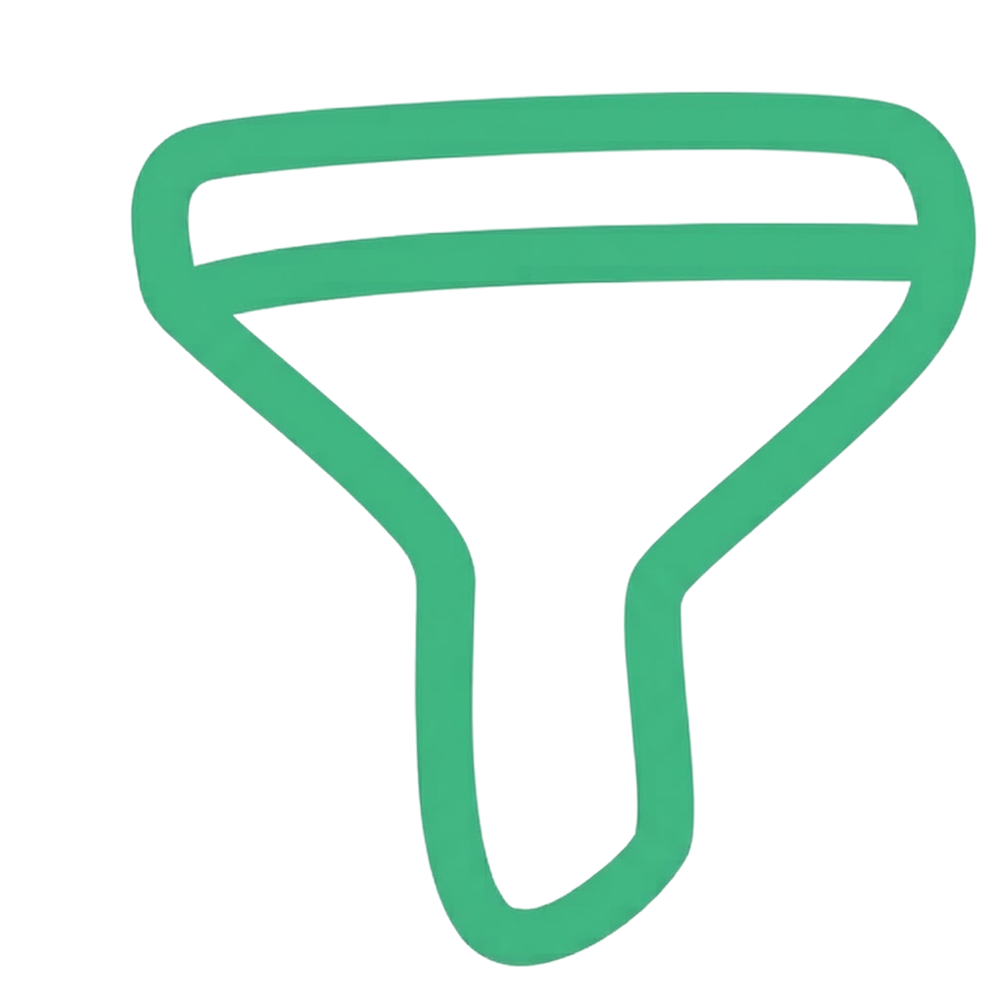
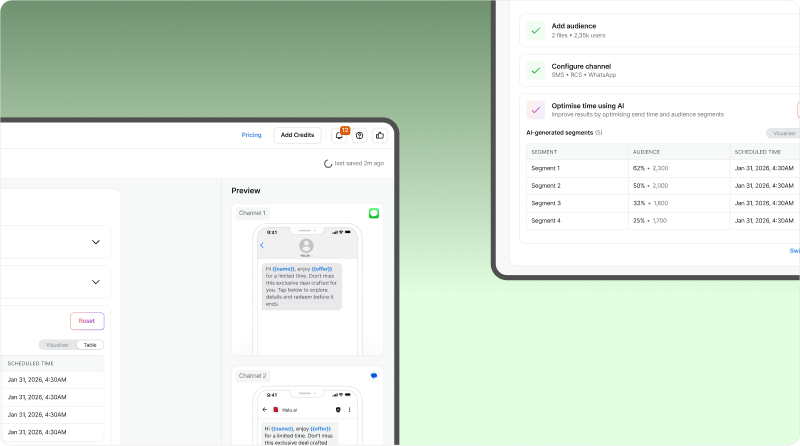
Helo.ai helps businesses send marketing messages over SMS, WhatsApp and RCS. I redesigned how they set up a campaign, turning 6 screens into 3 simple decisions.
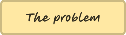
Campaign creation felt complex, fragmented, and overwhelming - leading to high drop-offs, low multi-channel adoption, and low confidence before launch.
Setting up campaigns takes too many steps - I just want to send a message.
I’m not confident if this will work correctly after setup.
This flow feels too long and confusing. I don’t know which channel to pick.
Struggled with templates, channels, and setup choices.
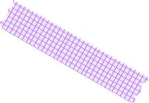
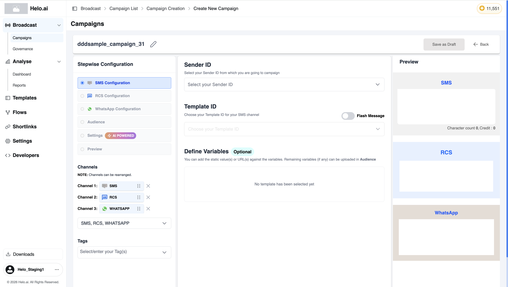
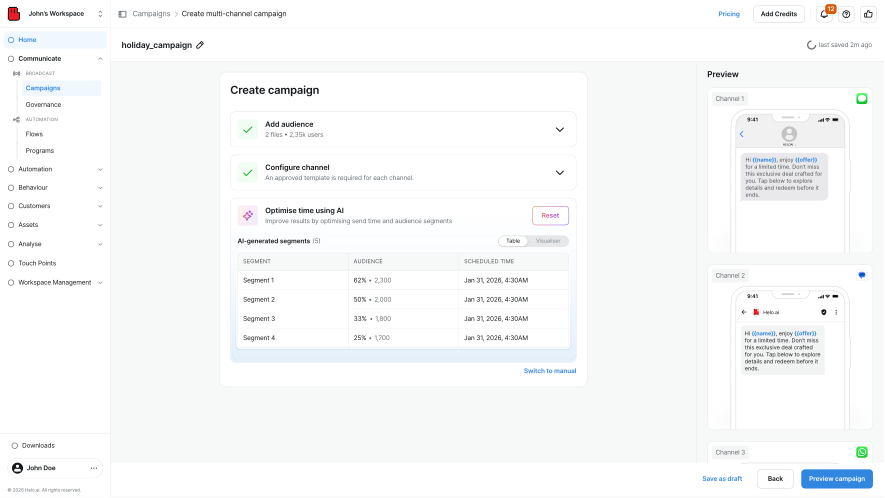
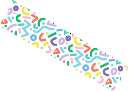
Goals
Reduce drop-offs by simplifying the lengthy campaign journey and perceived effort.
Encourage multi-channel adoption by showing the benefit of using more channels.
Introduce AI at the right moments to assist decision-making and improve campaign performance.
Offer campaign previews and simplified insights so users feel assured before launch.
Rethinking the experience
Replaced 6 sequential screens with 3 questions marketers already ask themselves - Who, What, and When. Nothing was removed; it’s simply ordered the way marketers think.
AfterStarting with intent
The campaign entry point became more than a way to start a campaign. We used it to nudge users towards multi-channel campaigns and surface AI-powered scheduling early, helping them make better decisions before getting into configuration.
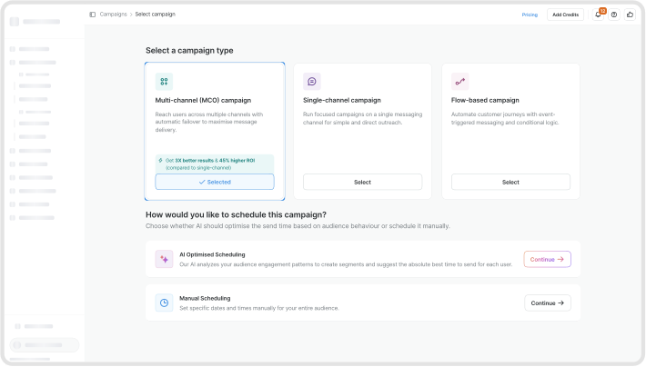
Promoted multi-channel outreach early with explicit ROI metrics to drive adoption over single channel
Prompted AI vs. Manual scheduling immediately to tailor the context-aware flow
One decision is open at a time, so users focus on a single step instead of seeing everything at once.
A glimpse into the iterations that shaped the final approach.
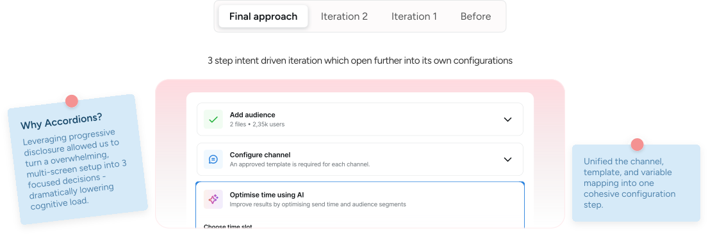
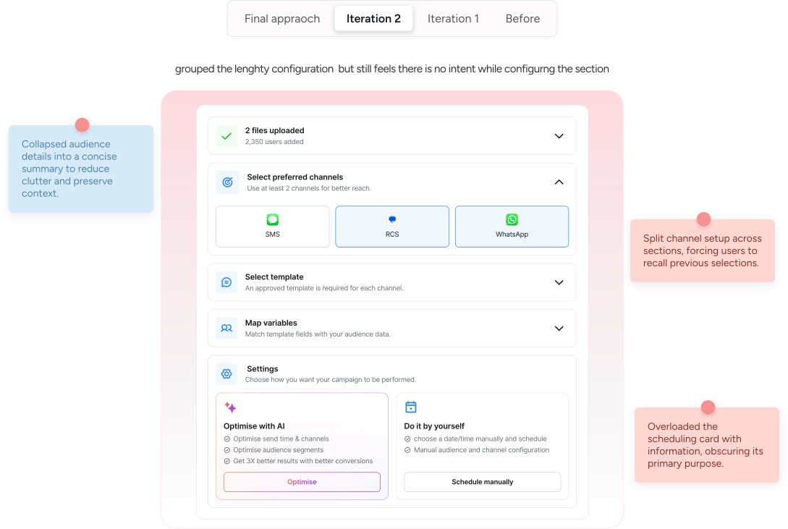
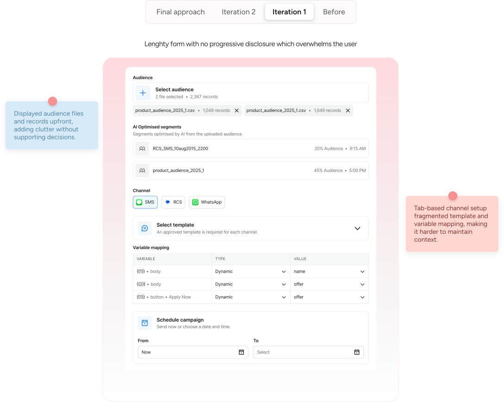
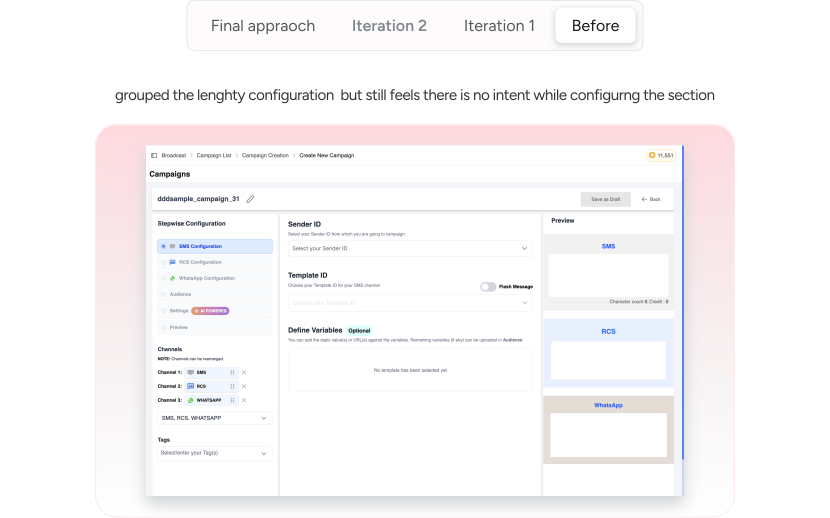
Upload user segments, select targeted lists, or run quick test campaigns on sample devices - establishing your audience foundation before setting up content.
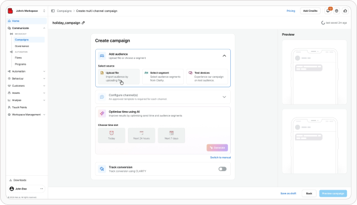
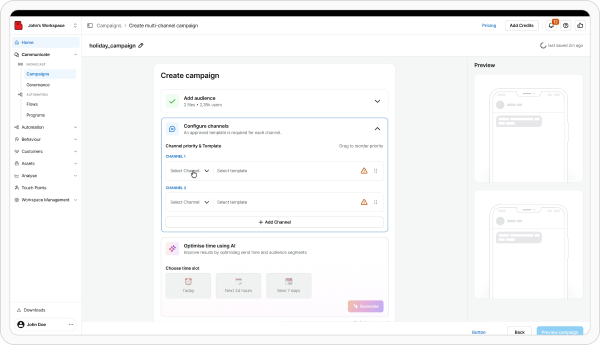
Pick the message for each channel and its backup order in one view (if SMS fails, it tries WhatsApp, then RCS) - no more jumping between separate channel screens.
Set a manual send time or let AI study when each group of users is most active and send at those times.
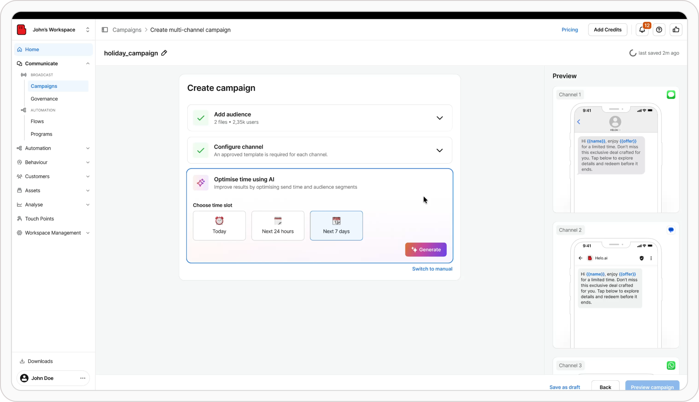
One fixed send time was costing money on messages nobody was awake to read.
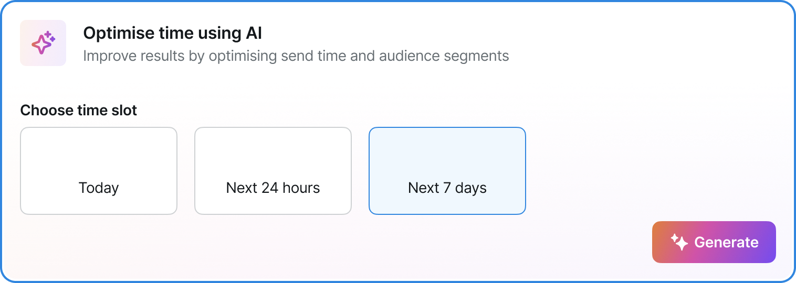
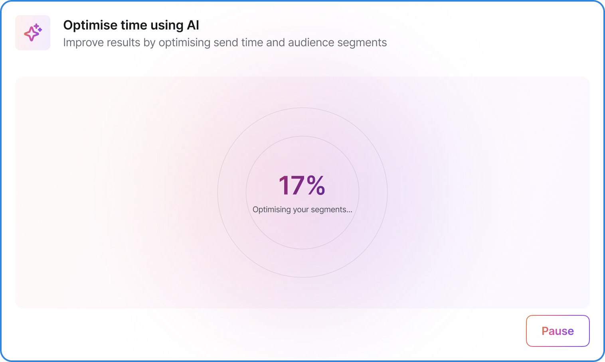
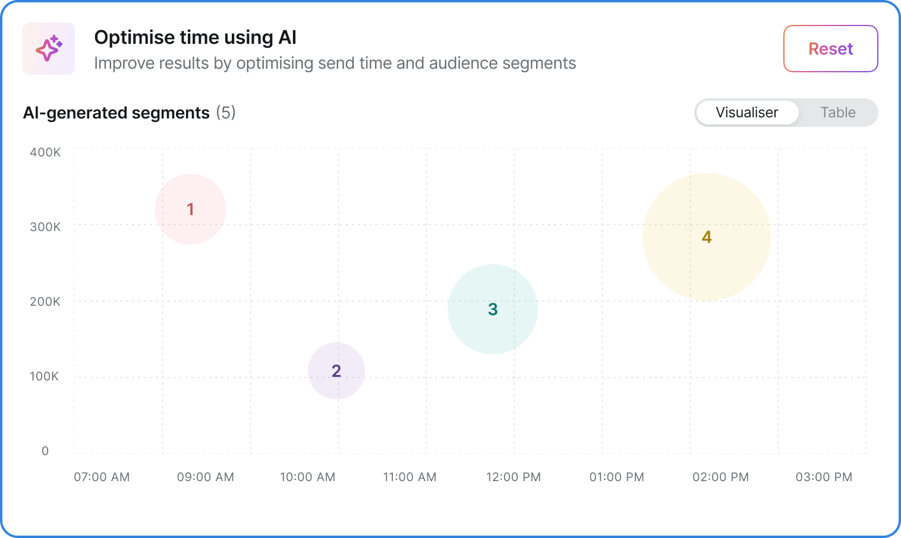
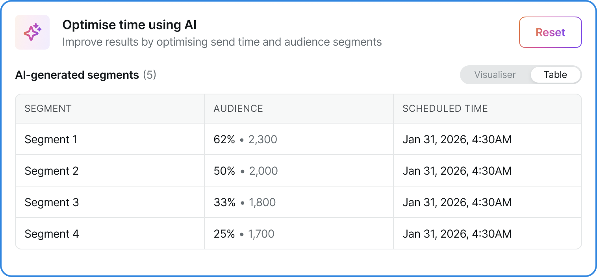
Live preview
A live side-by-side preview gives marketers instant visual feedback - showing exactly how each message, including personalised fields like {name}, will look on every channel before saving.


Final preview
Before launching, users get a unified preview of their configured campaign across all the channels with key details and message previews so they can quickly validate and make changes.

My process
AI took on the groundwork, so more of my time went into the decisions. It gave me first drafts; the calls on what to keep, cut and refine were mine.
AIGrouped user feedback and notes into themes.
MePicked the pain points that shaped the brief: too many steps and low confidence before launch.
AIGenerated quick layout and flow alternatives for the 3-step structure.
MeChose the one-decision-at-a-time direction and refined it over two iterations.
AIListed edge cases, like a channel without an approved template, and helped build interactive prototypes.
MeDesigned the states that mattered: warnings, channel fallbacks and the final preview.
Impact
↑ 50%
Campaign completion rate
↑ 30%
Multi-channel campaign adoption
↓ XX%
Drop-off during campaign creation
↓ 40%
Time to set up a campaign
The redesign shifted campaign creation from a configuration-heavy experience to a more guided, decision-focused journey—while making multi-channel and AI-assisted workflows easier to adopt.
Up next
Turning complex audience rules into a query that reads like a sentence: events, conditions and AND/OR groups in one clear view.
